🎆 스킬 VFX 전수조사 검토
스펙:
docs/specs/skill-vfx.md (이 페이지는 스펙 표를 그대로 읽어 그립니다) · 캡처: dev/vfx-survey/ · 스킬 ★★★ 기준, Lv1 은 비교용 · 재생 버튼은 dev/skills.html 을 그 스킬로 엽니다요약
원칙 — 이펙트 그림은 전부 PixelLab 텍스처
⑤-4 검사 계열 — 성기사·검성·대검전사·성좌기사·검신·파천검왕 (확인 대기)
스킬 9종(궁극기 3종 포함)과 평타 6종의 이펙트 그림을 PixelLab 시트로 바꿨습니다 (
▶ 스킬: 심판의 일격 Lv1 ★ ★★ ★★★ · 성역 Lv1 ★ ★★ ★★★ · 질풍난무 Lv1 ★ ★★ ★★★ · 일섬 Lv1 ★ ★★ ★★★ · 대검 횡참 Lv1 ★ ★★ ★★★ · 돌진 격돌 Lv1 ★ ★★ ★★★ · 성좌 강림 Lv1 ★ ★★ ★★★ · 천검 Lv1 ★ ★★ ★★★ · 파천참 Lv1 ★ ★★ ★★★
▶ 평타: 성기사 · 검성 · 대검전사 · 성좌기사 · 검신 · 파천검왕
▶ 실제 게임 (오프라인) — 상태는 스펙 "⑤-4 확인 방법"의
src/vfx-sword.js + 원래 파일 안의 그리기, 시트 src/vfx/*.png). 아래 그림은 모두 줄 = 전 / 후. 속도 ×0.25 로 보면 잘 보입니다.
▶ 스킬: 심판의 일격 Lv1 ★ ★★ ★★★ · 성역 Lv1 ★ ★★ ★★★ · 질풍난무 Lv1 ★ ★★ ★★★ · 일섬 Lv1 ★ ★★ ★★★ · 대검 횡참 Lv1 ★ ★★ ★★★ · 돌진 격돌 Lv1 ★ ★★ ★★★ · 성좌 강림 Lv1 ★ ★★ ★★★ · 천검 Lv1 ★ ★★ ★★★ · 파천참 Lv1 ★ ★★ ★★★
▶ 평타: 성기사 · 검성 · 대검전사 · 성좌기사 · 검신 · 파천검왕
▶ 실제 게임 (오프라인) — 상태는 스펙 "⑤-4 확인 방법"의
vfx4Preset('tyrant', 3)⑤-2 창기사 계열 — 텍스처 39장 + 시트 5장 (확인 대기)
창기사·용기병·할버디어·랜서·용황·전쟁군주·천마장군의 평타 궤적(W)·평타 명중(H)·스킬 본체(E)·스킬 명중(K)·궁극기(F)를 PixelLab 시트로 바꿨습니다. 코드는
src/vfx-spear.js(시트 등록·장병기 궤적·도트 용 마디·찌르기 줄) + 계열 연출 함수만 고쳤습니다. 원본·요청은 dev/vfx2/.
▶ 평타: 창기사 · 용기병 · 할버디어 · 랜서 · 용황 · 전쟁군주 · 천마장군평타 전후 (명중 직후) · 계열 흑백 비교
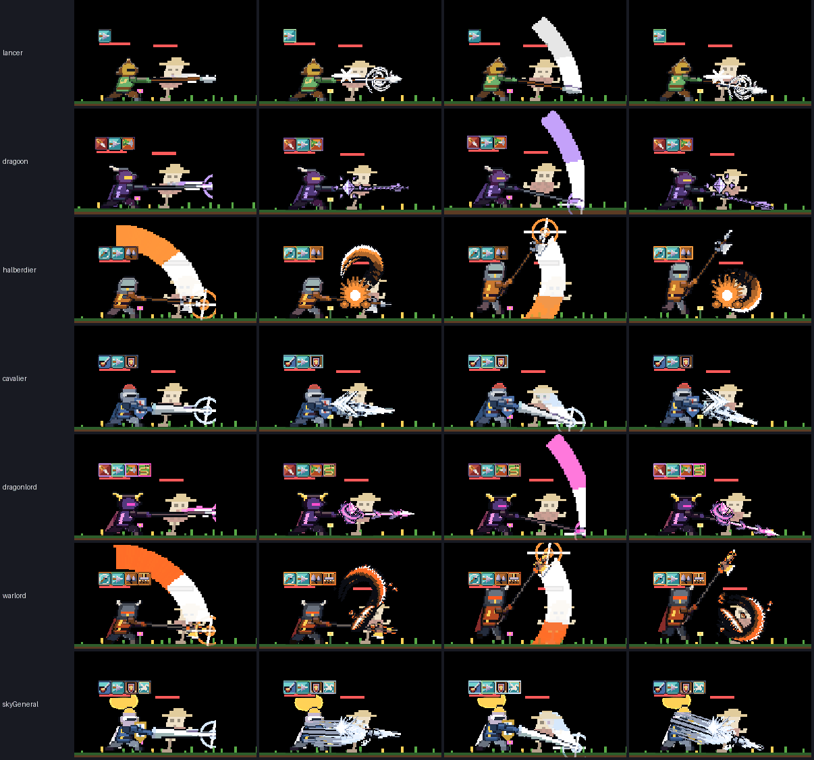
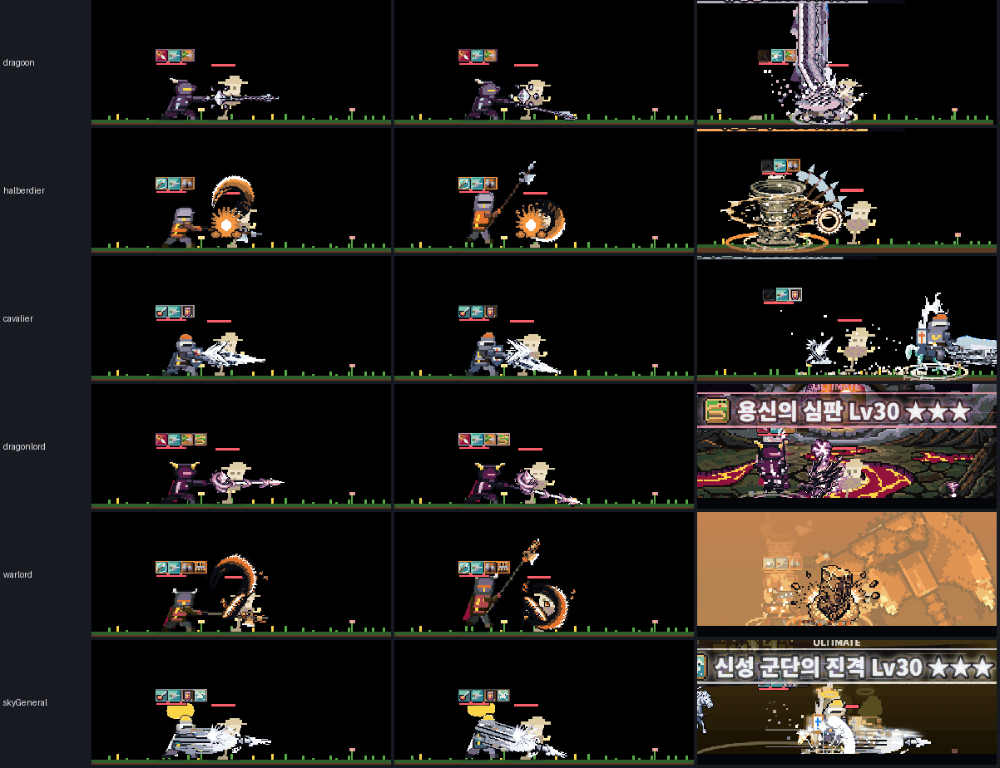
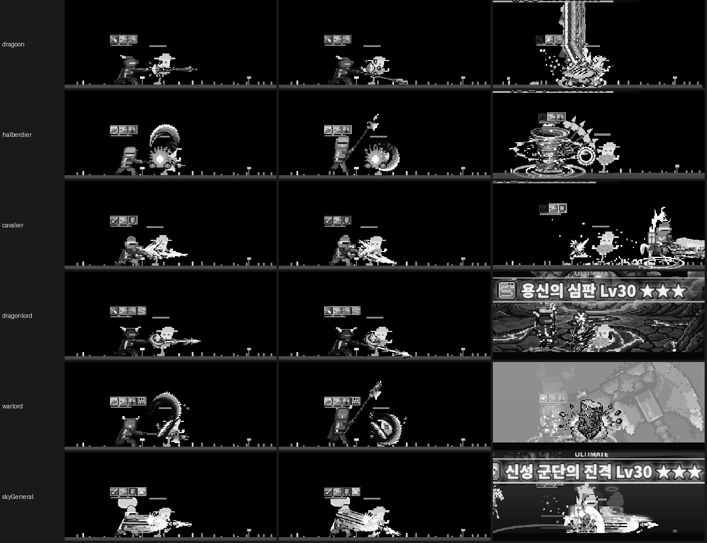
스킬 10종 전후
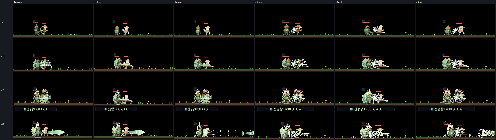
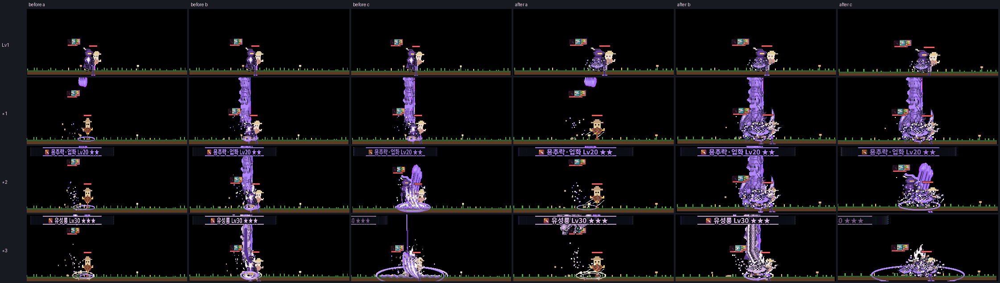
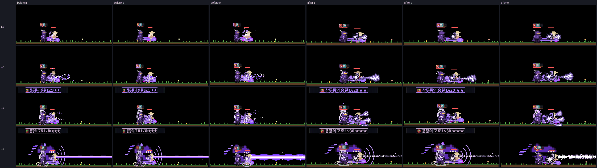
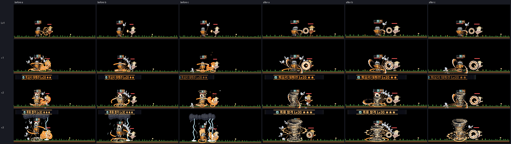
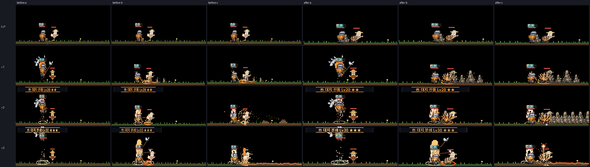
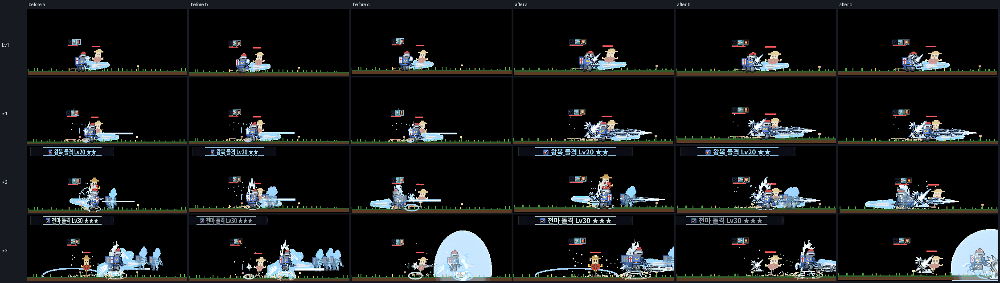
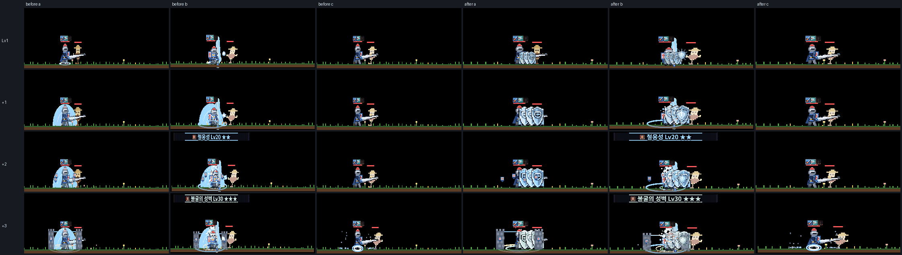
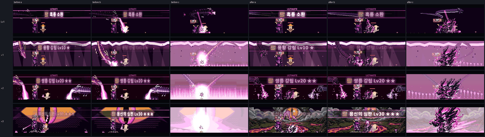
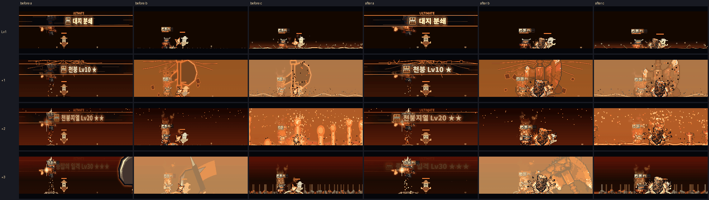
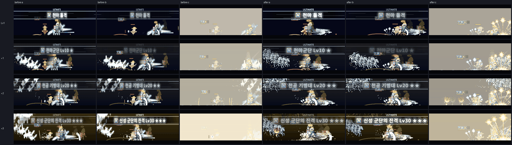
시트 모음 (원본 명암 — 게임에서는 직업 색으로 다시 칠함)
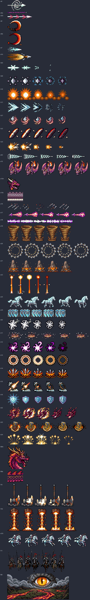
측정
| 항목 | 퀄업 전 | 퀄업 후 | 메모 |
|---|---|---|---|
| 전 직업 시전 예외 | — | 0 / 160회 | 스킬 40종 × 4단계 (dev/skills.html step 루프) |
| 10분 사냥 골드 합 (7직업 × Lv1·★★★ × 시드 8) | 9,018,769 | 8,991,529 (−0.30%) | 직업별로는 ±5% 잡음(정지 시간이 갈라지면 난수 순서가 달라짐). 진행을 정하는 게임 정지 합은 1409.9 → 1412.2초 (+0.003% of time) |
| 프레임 비용 ms (tick+render) — 할버디어 평타 · 용황 평타 | 3.25 · 2.40 | 1.93 · 2.07 | 숨은 탭 600프레임 평균, 옛 코드는 기준 커밋을 8874 로 띄워 같은 방식 |
| 대회전 ★★★ · 기병 돌격 ★★★ | 2.85 · 3.82 | 2.03 · 3.59 | |
| 용황 강림 · 천붕 · 천마군단 ★★★ | 2.98 · 3.50 · 6.36 | 2.59 · 2.68 · 4.24 | |
| 하단바 양 끝 밝기 변화 (2차 7종 × Lv1~★★★) | 기병 돌격 ★★★ 0.031 · 관통 찌르기 ★★★ 0.027 | 최대 0.041 (기병 돌격 ★★★), 나머지 0.002~0.038 | 기준 ±0.05. 처음엔 0.14 → 돌진 끝 섬광·충격을 기사 뒤쪽으로 옮겨 맞춤 |
⑤-0 본작업 — 공통 기반 + 첫 텍스처 (사용자 확인 완료) · v3 시전 오라 C17·C18 (확인 대기)
이제 게임 src 에 들어갔습니다 (
▶ 평타: 견습 기사 · 검사 · 성기사 (번쩍임만 바뀜) ▶ 강철 베기: Lv1 · ★ · ★★ · ★★★ ▶ 실제 게임 (오프라인) — 상태는 스펙 "⑤-0 확인 방법"의
src/vfx-tex.js, 시트 src/vfx/*.png). 시험 패치 없이 그대로 재생됩니다. 속도 ×0.25 로 보면 잘 보입니다.
▶ 평타: 견습 기사 · 검사 · 성기사 (번쩍임만 바뀜) ▶ 강철 베기: Lv1 · ★ · ★★ · ★★★ ▶ 실제 게임 (오프라인) — 상태는 스펙 "⑤-0 확인 방법"의
vfx0Preset('swordsman', 1)⑤-0 시험 전후 — PixelLab 텍스처 (W1 장검 궤적 · H1 명중 섬광 · C1 초승달 참격)
위 줄 = 지금(사각 칸·벡터), 아래 줄 = 같은 프레임에 텍스처를 씌운 모습. 게임 src 는 그대로이고 시뮬레이터 패치(
dev/review/vfx-trial.js)로 씌웠습니다. 성기사는 같은 텍스처를 금색으로 다시 칠한 것입니다.
직접 보기: ▶ 검사 평타 · ▶ 성기사 평타 · ▶ 강철 베기 Lv1 · ▶ 강철 베기 ★ — 재생 줄 "🧪 텍스처 시험" 버튼(또는 T 키)으로 켬/끔, 속도 ×0.25 로 보면 잘 보입니다.먼저 볼 것 — 문제 스킬 바로 재생
재생 링크는 새 탭에서 시뮬레이터를 그 스킬·단계로 고정해 반복 재생합니다 (스페이스 = 일시정지, → = 한 프레임).
하단바 전체 섬광 — 규칙 위반 11곳
skills.js:22-24 "궁극기 말고는 화면 전체를 번쩍이거나 어둡게 하지 않는다"(바탕화면 하단바 게임). 아래 2차 스킬 ★★★ 가 dimBand 로 하단바 전체를 덮습니다. 0.21 자잘이로 옮길지 정해 주세요.스킬 40종
평타·투사체 29종
a = 휘두르기 시작 / b = 명중 / c = 명중 직후 (1번 동작). 공통: 명중 스파크·히트스톱·흔들림 0, 원거리 착탄 효과는 화염·뇌전만.
계열 비교 — 색깔놀이 점검
줄 = 2차 3종 + 3차 3종, 칸 = 스킬 2개(3차는 궁극기 b·c) + 평타. 흑백판에서 구분되는지가 기준입니다.
텍스처 목록 (PixelLab 스프라이트 시트)
카드 메모 끝의 텍스처: 번호가 이 표의 번호입니다. 크기는 도트 단위(1도트 = 화면 3px).